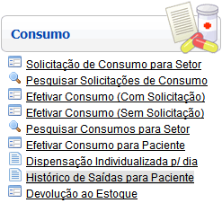
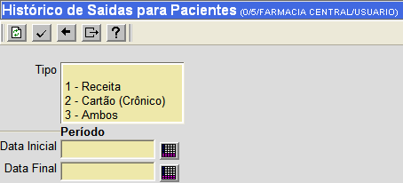
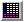
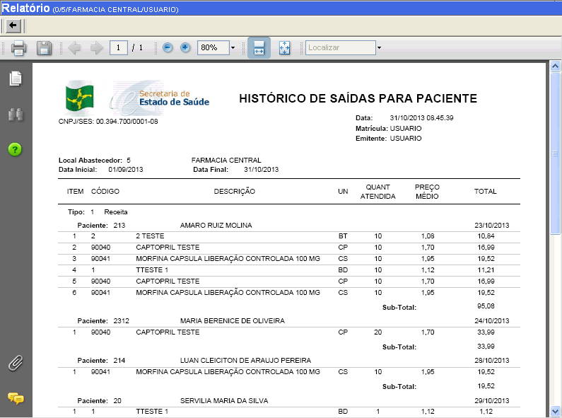

Histórico
de Saídas para Paciente [ Voltar ]
Essa tela permite o usuário emitir o relatório "HISTÓRICO DE SAÍDAS PARA PACIENTE".
O formulário "Histórico de Saídas para Paciente"
encontra-se dentro do
menu "Movimentações - Relatórios Gerenciais".

Após clicar no formulário, o sistema
abrirá a seguinte tela:

Siga os passos abaixo para gerar o histórico de saídas para pacientes.
1º Passo: configure os detalhes do histórico.
- Tipo. Selecione
um ou mais tipos de saída. Para selecionar mais de um tipo,
selecione-os com um clique enquanto pressiona a tecla "Ctrl". As opções
são: "1 - Receita", "2 - Cartão (Crônico)" e "3 - Ambos".
- Data
Inicial / Final. Informe aqui o dia para o qual deseja
visualizar o relatório. Clique no botão [Data] para selecioná-la a partir de um calendário.
|
Campos de data possuem alguns
atalhos importantes, são eles:
Data
atual: digite o sinal . (ponto) e
pressione a tecla "Enter" para que o sistema retorne a data atual;
Data
do mês corrente: digite o dia do mês e
pressione a tecla "Enter" para que o sistema retorne o mês e ano
correntes;
Dias
a contar da data atual: digite o sinal + (mais) ou - (menos)
antes do número de dias em referência à data atual e pressione
a
tecla "Enter" para a data anterior ou posterior à data atual. |
2º Passo: clique no botão  processar o histórico. Você será direcionado para o relatório processar o histórico. Você será direcionado para o relatório "HISTÓRICO DE SAÍDAS PARA PACIENTE" conforme figura abaixo. 
Ir
para o topo da página |